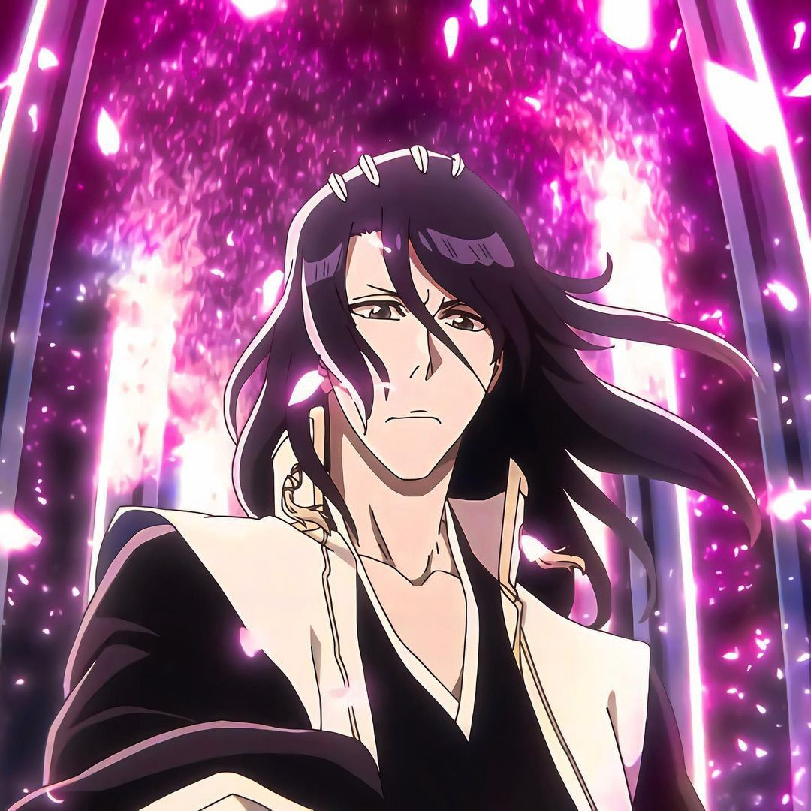

BYAKUYA
Byakuya Kuchiki é o capitão da 6ª Divisão do Gotei 13 e o líder da família nobre Kuchiki em Bleach. Ele é conhecido por
sua postura calma, rigor com as regras e lealdade à Soul Society. Byakuya é extremamente habilidoso, principalmente com
sua Zanpakutou, Senbonzakura, que em sua Shikai e Bankai se desintegra em milhares de pétalas afiadas, atacando os
oponentes de todas as direções. Embora inicialmente rígido e distante, especialmente com sua irmã adotiva Rukia, ele
mostra um lado mais compassivo e reflexivo ao longo da série, tornando-se um dos personagens mais complexos e admirados
de Bleach.
SHIKAI
A Shikai de Byakuya Kuchiki, chamada Senbonzakura (Mil Flores de Cerejeira), é uma habilidade bela e mortal. Quando
ativada, a lâmina de sua Zanpakutou se desfaz em milhares de pequenas lâminas afiadas, que se assemelham a pétalas de
flores de cerejeira ao flutuarem ao redor de Byakuya. Embora pareçam delicadas, essas "pétalas" são extremamente afiadas
e podem rasgar qualquer inimigo com facilidade.
Byakuya controla mentalmente as lâminas, direcionando-as para cercar e atacar seus oponentes de todas as direções. Isso
torna a Shikai de Senbonzakura incrivelmente difícil de esquivar ou defender, pois o inimigo é constantemente
pressionado por ataques vindos de vários ângulos.
A técnica reflete a personalidade de Byakuya: elegante, precisa e impiedosa. É uma habilidade que combina beleza e força
letal, mostrando a habilidade e a serenidade de Byakuya em batalha.
BANKAI
A Bankai de Byakuya Kuchiki é chamada Senbonzakura Kageyoshi (Sombra das Mil Flores de Cerejeira) e é uma das
habilidades mais poderosas e belas em Bleach. Ao ativá-la, Byakuya solta sua Zanpakutou, que afunda no chão. Em seguida,
duas enormes fileiras de lâminas surgem ao seu redor e, assim como na Shikai, essas lâminas se fragmentam em milhões de
"pétalas" afiadas, que ele controla para atacar e defender.
Diferente da Shikai, a Bankai libera uma quantidade imensamente maior de lâminas, tornando-a muito mais poderosa.
Byakuya pode controlar as pétalas com extrema precisão e usá-las em diferentes formações e técnicas, como:
Senkei: Forma as lâminas em círculos ao redor do oponente, criando um campo para ataques intensos e de curto alcance.
Gōkei: Envolve o inimigo com pétalas em uma esfera, que implode violentamente para maximizar o dano.
Shūkei: Hakuteiken: Condensa todas as lâminas em uma única espada para um golpe final extremamente poderoso.
A Bankai de Senbonzakura Kageyoshi reflete o estilo de Byakuya, combinando beleza e letalidade com uma elegância
imparável, e é uma técnica que ele usa para derrotar até os oponentes mais fortes.
AMIGOS QUE FAZEMOS PELO CAMINHO


GOTEI 13